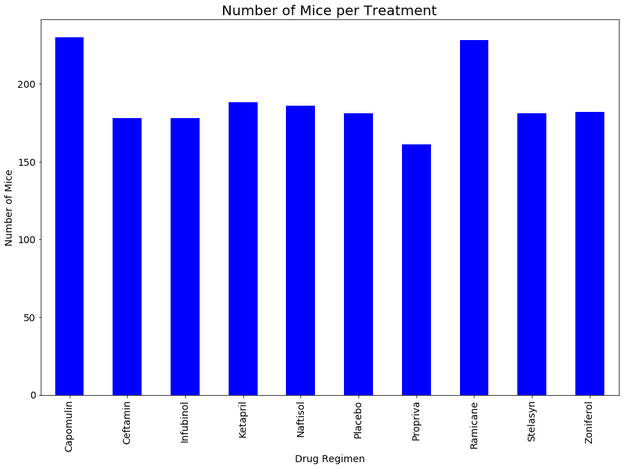
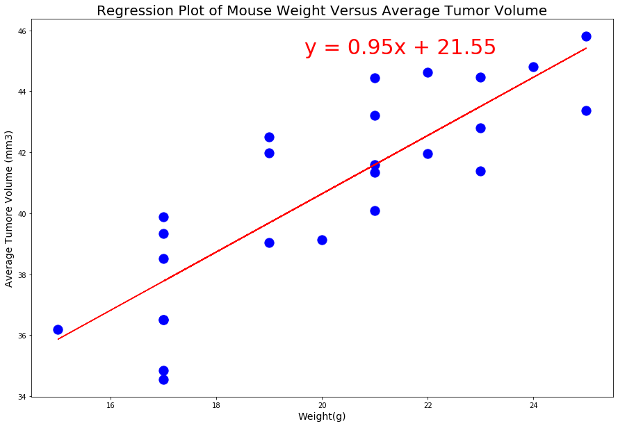
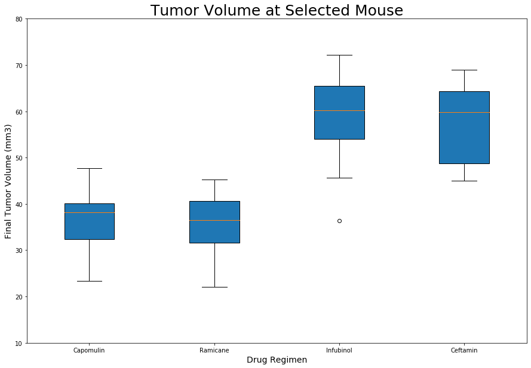
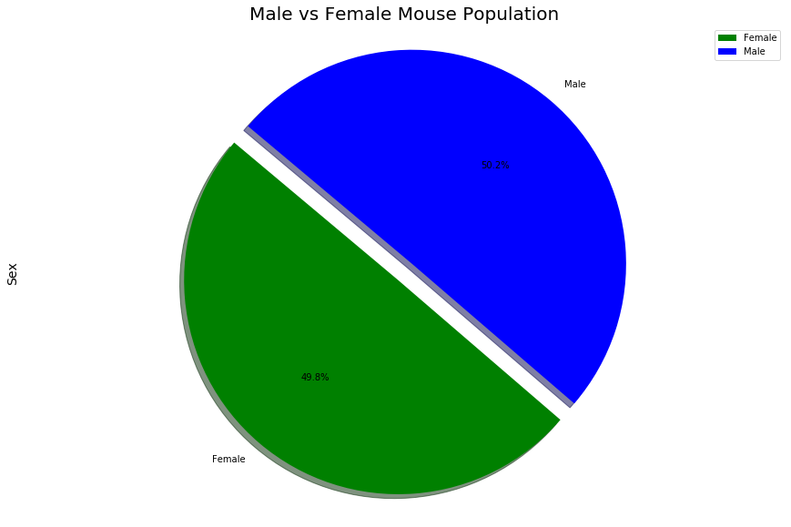

Pharmaceutical Data Analysis
Analyzing Treatment Performance for Squamous Cell Carcinoma (SCC)
Python
Matplotlib
Pandas
Statistics
Data Visualization
Treatment Distribution Analysis

Key Findings
- Capomulin has the highest number of mice (230) in the study
- Zoniferol has the smallest cohort (182 mice)
- Total of 248 unique mice after removing duplicates
- 10 different drug regimens were tested
This bar chart shows the distribution of mice across different pharmaceutical treatment regimens. Capomulin, the drug of interest, has the largest sample size, which provides more statistical power for analysis.
Methodology: The chart was generated using Matplotlib with a custom color palette. Data was aggregated using Pandas groupby operations.
Insight: Larger sample sizes for treatments like Capomulin provide more reliable statistical results and reduce sampling error.
Visualization Gallery
Click any visualization to view details
Treatment Distribution

Regression Analysis

Treatment Comparison

Gender Distribution
Project Features:
- Exploratory Data Analysis (EDA)
- Statistical Hypothesis Testing
- Interactive Visualizations
- Comparative Treatment Analysis
- Correlation Studies